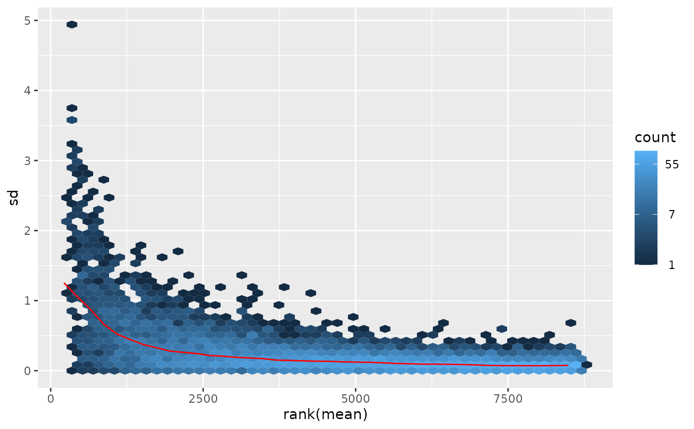
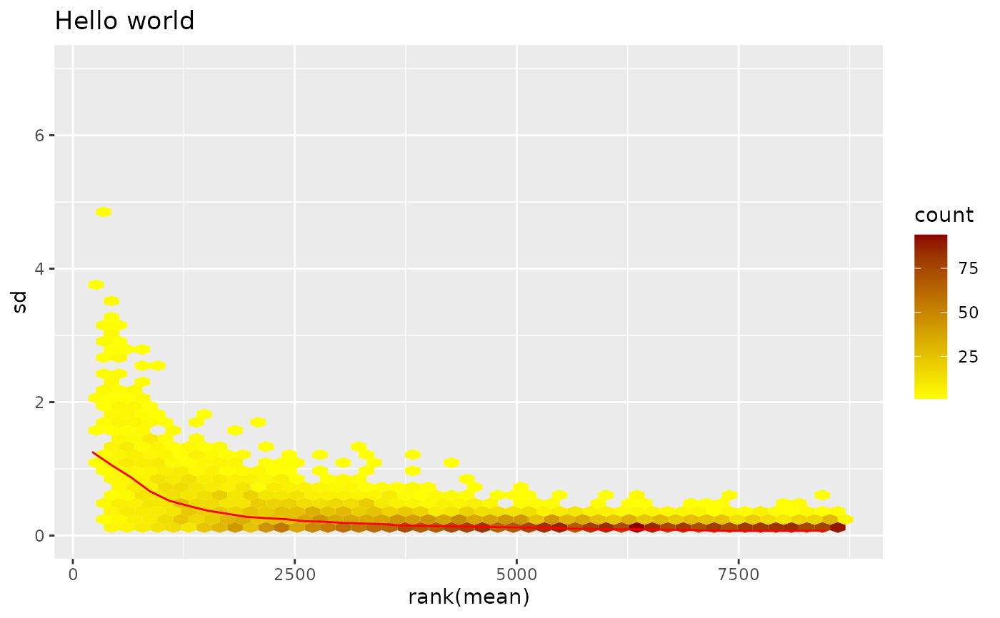

Plot row standard deviations versus row means
meanSdPlot.RdMethods for objects of classes
matrix,
ExpressionSet,
vsn and
MAList
to plot row standard deviations versus row means.
Usage
meanSdPlot(x,
ranks = TRUE,
xlab = ifelse(ranks, "rank(mean)", "mean"),
ylab = "sd",
pch,
plot = TRUE,
bins = 50,
...)Arguments
- x
- ranks
Logical, indicating whether the x-axis (means) should be plotted on the original scale (
FALSE) or on the rank scale (TRUE). The latter distributes the data more evenly along the x-axis and allows a better visual assessment of the standard deviation as a function of the mean.- xlab
Character, label for the x-axis.
- ylab
Character, label for the y-axis.
- pch
Ignored - exists for backward compatibility.
- plot
Logical. If
TRUE(default), a plot is produced. Calling the function withplot=FALSEcan be useful if only its return value is of interest.- bins
Gets passed on to
geom_hex.- ...
Further arguments that get passed on to
geom_hex.
Details
Standard deviation and mean are calculated row-wise from the
expression matrix (in) x. The scatterplot of these versus each other
allows you to visually verify whether there is a dependence of the standard
deviation (or variance) on the mean.
The red line depicts the running median estimator (window-width 10%).
If there is no variance-mean dependence, then the line should be approximately horizontal.
Value
A named list with five components: its elements px and
py are the x- and y-coordinates of the individual data points
in the plot; its first and second element are the x-coordinates and values of
the running median estimator (the red line in the plot).
Its element gg is the plot object (see examples).
Depending on the value of plot, the method can (and by default does) have a side effect,
which is to print gg on the active graphics device.
Examples
data("kidney")
log.na <- function(x) log(ifelse(x>0, x, NA))
exprs(kidney) <- log.na(exprs(kidney))
msd <- meanSdPlot(kidney)
#> Warning: Removed 898 rows containing non-finite outside the scale range
#> (`stat_binhex()`).

## The `ggplot` object is returned in list element `gg`, here is an example of how to modify the plot
library("ggplot2")
msd$gg +
ggtitle("Hello world") +
scale_fill_gradient(low = "yellow", high = "darkred") +
scale_y_continuous(limits = c(0, 7))
#> Scale for fill is already present.
#> Adding another scale for fill, which will replace the existing scale.
#> Warning: Removed 898 rows containing non-finite outside the scale range
#> (`stat_binhex()`).
#> Warning: Removed 49 rows containing missing values or values outside the scale range
#> (`geom_hex()`).

## Try this out with not log-transformed data, vsn2-transformed data, the lymphoma data, your data ...